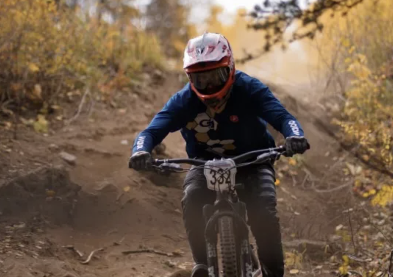

Organizational Leadership
Georgia Tech Cycling
President
Leading a collegiate cycling organization requires much more than organizing rides. I help coordinate the people, logistics, finances, travel, communication, and long-term direction that allow the club to support riders across multiple disciplines and experience levels.
What I lead
- Coordinate race travel, lodging, scheduling, and team logistics across collegiate competition.
- Help manage club finances, planning, and the operational decisions needed to support athletes.
- Maintain and improve the club's online presence, including the GT Cycling website and Instagram , along with calendar infrastructure.
- Work with officers and riders to strengthen the community around both competitive and recreational cycling.